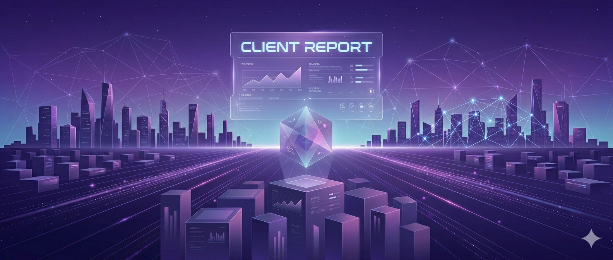

Client Report
Client report - As Client
What I ended up doing for my project was that I made the exact way I wanted my website to look like before I gave it to my developers. This way they knew exactly what I wanted, including the little things like fonts and font color.
Because of my wireframe being so complete, I did not have to talk to my developers as much as I would have otherwise.
I would say that my developers did a very good job. There ended up being only two finished pages since the guy assigned to page 3 didn't do any work. So that wasn't very good.
For me, the process went very smoothly. I think that next time, I will put evem more though into my wireframe if its gonna be the final result.
https://alisaishizaka.github.io/wdd130-Hendricks/Client report - As Lead Developer
I managed the team by ensuring that everyone knew which pages they were responsible for. I also coded the majority of the header and footer elements for my teamates.
I did have pretty good communication with my client. I would ask direct questions in a teams chat we had together. We also met online once.
I did not know how to publish it at first. It took a while, but I did figure it out and then I sent it to my client.
Once I figured out how to publish it, everything was smooth.
https://beaterboy-collab.github.io/wdd130-ferris/Client report - As Developer 1
I had pretty good communication with all of my lead developers. I can't remember there being too many issues.
I had a pretty good idea of what the expectation was. Most of the wireframes we received were pretty clear and easy to follow.
Yes. I was able to finish all of the pages I was assigned.
One time I just forgot to push the code to Github, but I figured it out.
https://godsgyrl46-hash.github.io/WDD130-Kent/https://abbykent813.github.io/wdd130-knudson/
Client report - Reflections
The most challenging part of this project was the communication. It was very hard to cordinate meetings and work schedules, when my teamates are all over the world.
I really enjoyed seeing all the different ideas people came up with.
If I could do the project again, I would make sure that everyone had the necesary communiation set up and they knew what was going on at all times.
I would say that after this experience I am more confident in working real world situations. I think that the communication between the Devs and the client was helpful for me. Also having teamates on an assignemnt was new to me, so that was good as well.